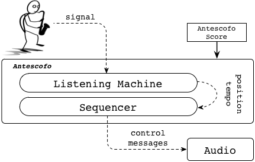

<div class="row-fluid">
<div class="span12">


  <h1>Programming Mixed Music in ReactiveML</h1>

  <p><center>G. Baudart, L. Mandel, M. Pouzet</center></p>
  <p><center><a href="http://www.cis.upenn.edu/~byorgey/farm13/">FARM 2013</a></center></p>

  <hr>


<div class="row-fluid">
  <div class="span6">
    <div class="thumbnail">
      
    </div>
  </div>
  <div class="span6">
<p>
Mixed music is about live musicians interacting with electronic parts
which are controlled by a computer during the performance. It allows
composers to use and combine traditional instruments with complex
synthesized sounds and other electronic devices. There are several
languages dedicated to the writing of mixed music scores. Among them,
the <a href="http://repmus.ircam.fr/antescofo">Antescofo</a> language
coupled with an advanced score follower allows a composer to manage
the reactive aspects of musical performances: how electronic parts
interact with a musician. However these domain specific languages do
not offer the expressiveness of functional programming.</p>

<p>
We embed the Antescofo language in a reactive functional
pro- gramming language, ReactiveML. This approach offers to the com-
poser recursion, higher order, inductive types, as well as a sim- ple
way to program complex reactive behaviors thanks to the syn- chronous
model of concurrency on which ReactiveML is built. This article
presents how to program mixed music in ReactiveML through several
examples.
</p>
  </div>
</div>


    <h3>Ressources</h3>
    <ul>
      <li><a href="./resources/farm13.pdf">Paper <i class="icon-file icon-black"></i></a></li>
      <li><a href="./resources/reactive_asco.tar.gz">Code <i class="icon-file icon-black"></i></a></li>
      <li><a href="./code/jacques.html">Frère Jacques</a></li>
      <li><a href="./videos.html">Videos Demos</a></li>
      <li><a href="<#ROOTDIR>/distrib/rml-1.08.06-2013-07-12.tar.gz">ReactiveML
	  Compiler version 1.08.06</a></li>
      <li><a href="<#ROOTDIR>/reactive_asco/index.html">Project Reactive Asco</a></li>
    </ul>


</div>
</div>
